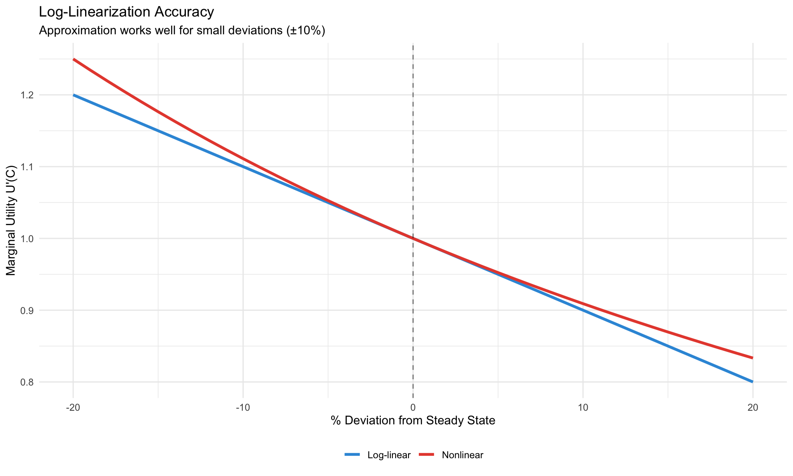
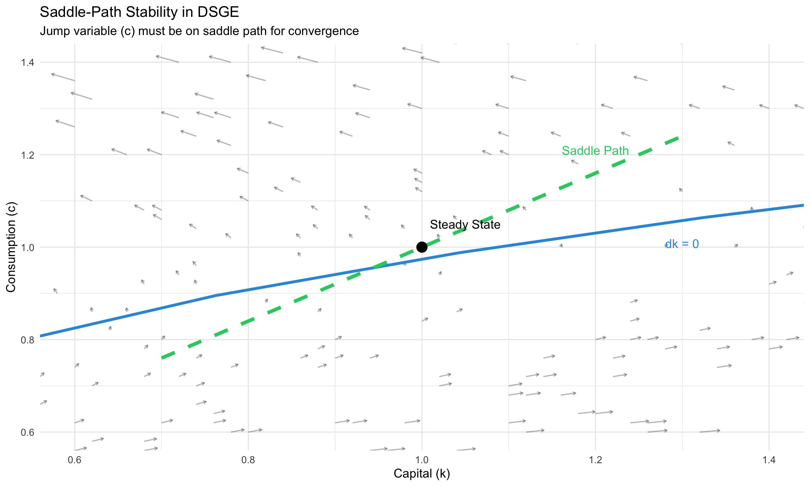

DSGE Foundations
Microfoundations, the New Keynesian Model, and Solution Methods
What is a DSGE Model?
Dynamic Stochastic General Equilibrium models are the workhorse of modern macroeconomics. They combine:
| Component | Meaning |
|---|---|
| Dynamic | Agents optimize over time, considering future |
| Stochastic | Random shocks drive business cycle fluctuations |
| General | All markets (goods, labor, capital) interact |
| Equilibrium | Supply equals demand in every market |
NoteThe Core Philosophy
DSGE models are microfounded: aggregate behavior emerges from explicit optimization by households, firms, and policymakers. No ad hoc aggregate relationships.
From Micro to Macro
The General Form
All DSGE models can be written as:
\[ \mathbb{E}_t\left[f(y_{t+1}, y_t, y_{t-1}, u_t)\right] = 0 \]
where:
- \(y_t\) = vector of endogenous variables (output, inflation, interest rate, capital, …)
- \(u_t\) = vector of exogenous shocks (technology, monetary, fiscal, …)
- \(f\) = system of equilibrium conditions (Euler equations, market clearing, …)
- \(\mathbb{E}_t\) = expectation conditional on time-\(t\) information
The challenge: solving for \(y_t\) as a function of states and shocks.
The RBC Core
Before New Keynesian elements, we start with the Real Business Cycle foundation.
Household Problem
A representative household maximizes expected lifetime utility:
\[ \max_{\{C_t, N_t, K_t\}} \mathbb{E}_0 \sum_{t=0}^{\infty} \beta^t U(C_t, N_t) \]
Subject to budget constraint: \[ C_t + K_t = W_t N_t + R_t^K K_{t-1} + \Pi_t - T_t + (1-\delta)K_{t-1} \]
where: - \(C_t\) = consumption - \(N_t\) = labor supply - \(K_t\) = end-of-period capital - \(W_t\) = real wage - \(R_t^K\) = rental rate on capital - \(\delta\) = depreciation rate - \(\Pi_t\) = firm profits - \(T_t\) = lump-sum taxes
First-Order Conditions
Euler equation (intertemporal consumption choice): \[ U_C(C_t, N_t) = \beta \mathbb{E}_t\left[U_C(C_{t+1}, N_{t+1}) \cdot (R_{t+1}^K + 1 - \delta)\right] \]
Labor supply (consumption-leisure trade-off): \[ \frac{-U_N(C_t, N_t)}{U_C(C_t, N_t)} = W_t \]
Example: Log Utility
With \(U(C, N) = \log(C) - \chi \frac{N^{1+\phi}}{1+\phi}\):
\[ \frac{1}{C_t} = \beta \mathbb{E}_t\left[\frac{1}{C_{t+1}} (R_{t+1}^K + 1 - \delta)\right] \]
\[ \chi N_t^\phi \cdot C_t = W_t \]
Code
# Illustrate consumption smoothing
beta <- 0.99
R_gross <- 1.02 # gross interest rate
sigma <- 1 # CRRA coefficient
# For sigma = 1 (log utility): C_t+1/C_t = (beta * R)
growth_rate <- beta * R_gross
# Simulate consumption path with and without smoothing
T_sim <- 20
income <- c(rep(1, 10), rep(1.2, 10)) # income jumps at t=10
# Without smoothing (hand-to-mouth)
c_htm <- income
# With smoothing (optimal)
# Permanent income = average
perm_inc <- mean(income)
c_smooth <- rep(perm_inc, T_sim)
consumption_df <- tibble(
t = rep(1:T_sim, 2),
consumption = c(c_htm, c_smooth),
type = rep(c("Hand-to-mouth", "Euler optimal"), each = T_sim)
)
ggplot(consumption_df, aes(x = t, y = consumption, color = type, linetype = type)) +
geom_line(linewidth = 1.2) +
geom_vline(xintercept = 10, linetype = "dashed", alpha = 0.5) +
annotate("text", x = 10.5, y = 1.15, label = "Income jump", hjust = 0) +
scale_color_manual(values = c("#e74c3c", "#3498db")) +
labs(title = "Consumption Smoothing via the Euler Equation",
subtitle = "Optimal: smooth consumption; Suboptimal: track income",
x = "Period", y = "Consumption", color = NULL, linetype = NULL) +
theme_minimal() +
theme(legend.position = "bottom")
Firm Problem
A representative firm maximizes profits with Cobb-Douglas production:
\[ Y_t = A_t K_{t-1}^\alpha N_t^{1-\alpha} \]
Factor demands (competitive markets, firms are price-takers): \[ W_t = (1-\alpha) \frac{Y_t}{N_t} \] \[ R_t^K = \alpha \frac{Y_t}{K_{t-1}} \]
Technology shock follows AR(1): \[ \log(A_t) = \rho_A \log(A_{t-1}) + \varepsilon_{A,t}, \quad \varepsilon_{A,t} \sim N(0, \sigma_A^2) \]
Market Clearing
\[ Y_t = C_t + I_t \]
where investment \(I_t = K_t - (1-\delta)K_{t-1}\).
The Complete RBC Model
| Equation | Name | Variables |
|---|---|---|
| \(\frac{1}{C_t} = \beta \mathbb{E}_t\left[\frac{1}{C_{t+1}}(R_{t+1}^K + 1 - \delta)\right]\) | Euler | \(C, R^K\) |
| \(\chi N_t^\phi C_t = W_t\) | Labor supply | \(N, C, W\) |
| \(Y_t = A_t K_{t-1}^\alpha N_t^{1-\alpha}\) | Production | \(Y, A, K, N\) |
| \(W_t = (1-\alpha) Y_t / N_t\) | Labor demand | \(W, Y, N\) |
| \(R_t^K = \alpha Y_t / K_{t-1}\) | Capital demand | \(R^K, Y, K\) |
| \(Y_t = C_t + K_t - (1-\delta)K_{t-1}\) | Resource | \(Y, C, K\) |
| \(\log A_t = \rho_A \log A_{t-1} + \varepsilon_A\) | Technology | \(A\) |
7 equations, 7 unknowns: \((Y, C, N, K, W, R^K, A)\)
The New Keynesian Model
The RBC model has no role for monetary policy (all real). The New Keynesian model adds:
- Nominal rigidities (sticky prices/wages)
- Monopolistic competition (firms have pricing power)
- Monetary policy (central bank sets interest rate)
The 3-Equation NK Model
The canonical log-linearized NK model:
1. IS Curve (Dynamic IS)
From the household’s Euler equation: \[ \hat{y}_t = \mathbb{E}_t[\hat{y}_{t+1}] - \frac{1}{\sigma}(i_t - \mathbb{E}_t[\pi_{t+1}] - r_t^n) \]
where: - \(\hat{y}_t\) = output gap (deviation from flexible-price equilibrium) - \(i_t\) = nominal interest rate - \(\pi_t\) = inflation - \(r_t^n\) = natural rate of interest - \(\sigma\) = inverse elasticity of intertemporal substitution
Interpretation: Higher real interest rate → postpone consumption → lower output today.
2. Phillips Curve (NKPC)
From Calvo pricing (fraction \(1-\theta\) of firms adjust each period): \[ \pi_t = \beta \mathbb{E}_t[\pi_{t+1}] + \kappa \hat{y}_t \]
where: \[ \kappa = \frac{(1-\theta)(1-\beta\theta)}{\theta} \cdot (\sigma + \phi) \]
Interpretation: Inflation today depends on expected future inflation plus current output gap (marginal cost pressure).
3. Taylor Rule
Central bank sets interest rate: \[ i_t = \rho_i i_{t-1} + (1-\rho_i)\left[r^* + \phi_\pi(\pi_t - \pi^*) + \phi_y \hat{y}_t\right] + \varepsilon_{m,t} \]
Standard calibration:
| Parameter | Value | Interpretation |
|---|---|---|
| \(\rho_i\) | 0.8 | Interest rate smoothing |
| \(\phi_\pi\) | 1.5 | Response to inflation (Taylor principle: \(\phi_\pi > 1\)) |
| \(\phi_y\) | 0.5/4 = 0.125 | Response to output gap (quarterly) |
Code
# Solve simple 3-eq NK model
# Parameters
beta <- 0.99
sigma <- 1
kappa <- 0.1
phi_pi <- 1.5
phi_y <- 0.125
rho_i <- 0.8
# Monetary policy shock simulation
T_sim <- 40
eps_m <- c(0, 0.25, rep(0, T_sim - 2)) # 25bp shock at t=2
# Initialize
y_gap <- pi <- i_rate <- numeric(T_sim)
y_gap[1] <- pi[1] <- i_rate[1] <- 0
# Simple forward-looking solution (assuming expectations = 0 for simplicity)
# More rigorous: use Blanchard-Kahn
for (t in 2:T_sim) {
# Taylor rule
i_rate[t] <- rho_i * i_rate[t-1] + (1 - rho_i) * (phi_pi * pi[t-1] + phi_y * y_gap[t-1]) + eps_m[t]
# IS curve (simplified: E[y+1] = 0, E[pi+1] = 0)
y_gap[t] <- -1/sigma * (i_rate[t] - 0 - 0) + 0.7 * y_gap[t-1]
# Phillips curve
pi[t] <- beta * 0 + kappa * y_gap[t] + 0.5 * pi[t-1]
}
nk_df <- tibble(
t = rep(1:T_sim, 3),
value = c(y_gap * 100, pi * 100, i_rate * 100),
variable = rep(c("Output Gap (%)", "Inflation (%)", "Interest Rate (%)"), each = T_sim)
)
ggplot(nk_df, aes(x = t, y = value, color = variable)) +
geom_line(linewidth = 1) +
geom_hline(yintercept = 0, linetype = "dashed", alpha = 0.5) +
facet_wrap(~variable, scales = "free_y", ncol = 1) +
labs(title = "Response to 25bp Monetary Policy Shock",
subtitle = "Simplified 3-equation NK model",
x = "Quarters", y = "Percent deviation") +
scale_color_manual(values = c("#3498db", "#e74c3c", "#2ecc71")) +
theme_minimal() +
theme(legend.position = "none")
Deriving the Phillips Curve
Calvo Pricing Setup
- Each period, fraction \(1-\theta\) of firms can reset prices
- Fraction \(\theta\) are “stuck” with last period’s price
- When firms can adjust, they set price to maximize expected profits over the time they’ll be stuck
Optimal Price Setting
A firm that can adjust at time \(t\) chooses \(P_t^*\) to maximize: \[ \mathbb{E}_t \sum_{k=0}^{\infty} (\beta\theta)^k \left[ \frac{P_t^*}{P_{t+k}} Y_{t+k|t} - MC_{t+k} Y_{t+k|t} \right] \]
Result (after log-linearization): \[ \hat{p}_t^* = (1-\beta\theta) \sum_{k=0}^{\infty} (\beta\theta)^k \mathbb{E}_t[\widehat{mc}_{t+k}] \]
Firms set prices as a weighted average of expected future marginal costs.
Aggregating to the Phillips Curve
Price index evolution: \[ P_t = \left[\theta P_{t-1}^{1-\epsilon} + (1-\theta)(P_t^*)^{1-\epsilon}\right]^{\frac{1}{1-\epsilon}} \]
Log-linearizing and combining: \[ \pi_t = \beta \mathbb{E}_t[\pi_{t+1}] + \kappa \cdot \widehat{mc}_t \]
With \(\widehat{mc}_t \propto \hat{y}_t\) (output gap approximates marginal cost deviations).
Log-Linearization
DSGE models are nonlinear. To solve them analytically (or with first-order perturbation), we log-linearize around the steady state.
The Technique
For any variable \(X_t\):
\[ \hat{x}_t \equiv \log(X_t) - \log(\bar{X}) = \log\left(\frac{X_t}{\bar{X}}\right) \approx \frac{X_t - \bar{X}}{\bar{X}} \]
So \(\hat{x}_t\) is the percentage deviation from steady state.
Key Approximation
For any function \(f(X_t, Y_t)\): \[ f(X_t, Y_t) \approx f(\bar{X}, \bar{Y}) + f_X(\bar{X}, \bar{Y})(X_t - \bar{X}) + f_Y(\bar{X}, \bar{Y})(Y_t - \bar{Y}) \]
Example: Euler Equation
Nonlinear Euler: \[ \frac{1}{C_t} = \beta \mathbb{E}_t\left[\frac{1}{C_{t+1}} R_{t+1}\right] \]
Step 1: Steady state \[ \frac{1}{\bar{C}} = \beta \frac{1}{\bar{C}} \bar{R} \implies \bar{R} = \frac{1}{\beta} \]
Step 2: Log-linearize. Let \(C_t = \bar{C} e^{\hat{c}_t} \approx \bar{C}(1 + \hat{c}_t)\): \[ \frac{1}{\bar{C}(1 + \hat{c}_t)} = \beta \mathbb{E}_t\left[\frac{1}{\bar{C}(1 + \hat{c}_{t+1})} \bar{R}(1 + \hat{r}_{t+1})\right] \]
Step 3: First-order Taylor expansion (ignore second-order terms): \[ 1 - \hat{c}_t = \beta \bar{R} \mathbb{E}_t\left[(1 - \hat{c}_{t+1})(1 + \hat{r}_{t+1})\right] \] \[ 1 - \hat{c}_t \approx \mathbb{E}_t[1 - \hat{c}_{t+1} + \hat{r}_{t+1}] \]
Result: \[ \hat{c}_t = \mathbb{E}_t[\hat{c}_{t+1}] - (\hat{r}_{t+1} - 0) \]
This is the log-linearized Euler equation (with \(\sigma = 1\)).
Code
# Compare nonlinear vs log-linear Euler
C_ss <- 1
beta <- 0.99
R_ss <- 1/beta
# Deviations from steady state
c_dev <- seq(-0.2, 0.2, 0.01)
# Nonlinear: U'(C) = 1/C
uprime_nonlinear <- 1 / (C_ss * (1 + c_dev))
# Log-linear: U'(C) ≈ 1/C_ss * (1 - c_dev)
uprime_linear <- (1/C_ss) * (1 - c_dev)
approx_df <- tibble(
deviation = rep(c_dev * 100, 2),
marginal_utility = c(uprime_nonlinear, uprime_linear),
method = rep(c("Nonlinear", "Log-linear"), each = length(c_dev))
)
ggplot(approx_df, aes(x = deviation, y = marginal_utility, color = method)) +
geom_line(linewidth = 1.2) +
geom_vline(xintercept = 0, linetype = "dashed", alpha = 0.5) +
labs(title = "Log-Linearization Accuracy",
subtitle = "Approximation works well for small deviations (±10%)",
x = "% Deviation from Steady State",
y = "Marginal Utility U'(C)", color = NULL) +
scale_color_manual(values = c("#3498db", "#e74c3c")) +
theme_minimal() +
theme(legend.position = "bottom")
Solving Rational Expectations Models
After log-linearization, DSGE models take the form:
\[ A \mathbb{E}_t[y_{t+1}] = B y_t + C u_t \]
where \(y_t\) contains both predetermined (state) and jump (control) variables.
Partitioning the System
Split \(y_t = \begin{pmatrix} x_t \\ z_t \end{pmatrix}\) where:
- \(x_t\): Predetermined (state) variables — known at time \(t\) (e.g., capital \(K_{t-1}\))
- \(z_t\): Jump (forward-looking) variables — can adjust freely (e.g., consumption, inflation)
Blanchard-Kahn Conditions
The eigenvalue decomposition of the system matrix determines solvability (Blanchard and Kahn 1980).
ImportantBlanchard-Kahn (1980) Conditions
For a unique stable solution:
Number of eigenvalues outside unit circle = Number of jump variables
| Eigenvalue Count | Diagnosis |
|---|---|
| Equals number of jump vars | Unique solution (saddle-path stable) |
| Less than number of jump vars | Indeterminacy (multiple equilibria, sunspots) |
| Greater than number of jump vars | No solution (explosive dynamics) |
The Solution Form
If BK conditions hold, the solution is:
\[ x_{t+1} = H_x x_t + H_u u_{t+1} \] \[ z_t = G_x x_t \]
The policy function \(G_x\) tells us how jump variables respond to states. The transition matrix \(H_x\) governs state evolution.
Code
# Illustrate saddle-path in a simple 2-variable system
# x_t = state (capital), z_t = control (consumption)
# Phase diagram for consumption-capital
k_grid <- seq(0.5, 1.5, 0.02)
c_grid <- seq(0.5, 1.5, 0.02)
# Steady state (normalized)
k_ss <- c_ss <- 1
# Simplified dynamics for illustration
# dk/dt = 0 locus: c = f(k) - delta*k
# dc/dt = 0 locus: f'(k) = rho + delta
alpha <- 0.33
delta <- 0.025
rho <- 0.01
# Nullclines
c_from_k_nullcline <- function(k) k^alpha - delta * k
k_from_c_nullcline <- (alpha / (rho + delta))^(1/(1-alpha))
# Create phase diagram
phase_df <- expand_grid(k = k_grid, c = c_grid) %>%
mutate(
dk = k^alpha - c - delta * k,
dc = (alpha * k^(alpha-1) - delta - rho) * c / 2 # simplified
)
# Saddle path (approximate)
saddle_path <- tibble(
k = seq(0.7, 1.3, 0.01),
c = c_ss + 0.8 * (k - k_ss) # slope of stable eigenvector
)
ggplot() +
# Direction field
geom_segment(data = phase_df %>% sample_n(200),
aes(x = k, y = c, xend = k + dk*0.05, yend = c + dc*0.05),
arrow = arrow(length = unit(0.1, "cm")), alpha = 0.3) +
# Nullclines
geom_function(fun = c_from_k_nullcline, color = "#3498db", linewidth = 1.2) +
geom_vline(xintercept = k_from_c_nullcline, color = "#e74c3c", linewidth = 1.2) +
# Saddle path
geom_line(data = saddle_path, aes(x = k, y = c),
color = "#2ecc71", linewidth = 1.5, linetype = "dashed") +
# Steady state
geom_point(aes(x = k_ss, y = c_ss), size = 4, color = "black") +
annotate("text", x = k_ss + 0.05, y = c_ss + 0.05, label = "Steady State") +
annotate("text", x = 1.3, y = c_from_k_nullcline(1.3) - 0.05,
label = "dk = 0", color = "#3498db") +
annotate("text", x = k_from_c_nullcline + 0.05, y = 1.4,
label = "dc = 0", color = "#e74c3c") +
annotate("text", x = 1.2, y = c_ss + 0.8 * 0.2 + 0.05,
label = "Saddle Path", color = "#2ecc71") +
labs(title = "Saddle-Path Stability in DSGE",
subtitle = "Jump variable (c) must be on saddle path for convergence",
x = "Capital (k)", y = "Consumption (c)") +
coord_cartesian(xlim = c(0.6, 1.4), ylim = c(0.6, 1.4)) +
theme_minimal()
Common Causes of BK Violations
| Problem | Symptom | Common Fix |
|---|---|---|
| Taylor principle violated | Too few unstable roots | Raise \(\phi_\pi\) above 1 |
| Missing expectations | Wrong root count | Check all \(\mathbb{E}_t\) terms |
| Timing error | Explosive solutions | Dynare uses end-of-period capital: use \(K(-1)\) |
| Wrong variable classification | Indeterminacy | Re-check predetermined vs. jump |
Numerical Solution: QZ Decomposition
For larger models, we use the generalized Schur (QZ) decomposition:
\[ A = Q \Lambda Z', \quad B = Q \Omega Z' \]
where \(\Lambda/\Omega\) gives generalized eigenvalues. Reorder to put unstable eigenvalues in the bottom block.
# R code sketch for BK solution
solve_dsge_bk <- function(A, B, n_state) {
# A * E[y_{t+1}] = B * y_t
# y = [x; z] where x = states, z = jumps
n_total <- nrow(A)
n_jump <- n_total - n_state
# QZ decomposition
qz <- geigen::gqz(A, B) # Generalized Schur
# Eigenvalues
eig <- qz$alpha / qz$beta
n_unstable <- sum(abs(eig) > 1)
# Check BK conditions
if (n_unstable != n_jump) {
stop(paste("BK violation:", n_unstable, "unstable,", n_jump, "jump vars"))
}
# Extract policy function (from stable block)
# ... (reorder and partition)
list(G = G_matrix, H = H_matrix, eigenvalues = eig)
}Calibration
Before estimation (Module 11), we calibrate parameters using:
- Microeconomic evidence (labor supply elasticity, depreciation rate)
- Long-run averages (capital-output ratio, hours worked)
- Steady-state relationships (Euler equation pins down \(\beta\))
Standard RBC/NK Calibration
| Parameter | Symbol | Value | Source |
|---|---|---|---|
| Discount factor | \(\beta\) | 0.99 | Real interest rate ≈ 4% annually |
| Capital share | \(\alpha\) | 0.33 | National accounts |
| Depreciation | \(\delta\) | 0.025 | 10% annual depreciation |
| Risk aversion | \(\sigma\) | 1-2 | Micro studies |
| Frisch elasticity | \(1/\phi\) | 0.5-2 | Labor supply literature |
| Calvo parameter | \(\theta\) | 0.75 | Prices adjust every 4 quarters |
| Inflation weight | \(\phi_\pi\) | 1.5 | Taylor (1993) |
| Output weight | \(\phi_y\) | 0.125 | Taylor (1993), quarterly |
Matching Moments
Target: Model-implied moments ≈ Data moments
| Moment | Data (US) | Typical RBC |
|---|---|---|
| std(Y) | 1.5-2% | Match by calibrating \(\sigma_A\) |
| std(C)/std(Y) | 0.5-0.7 | Endogenous |
| std(I)/std(Y) | 2.5-3.5 | Endogenous |
| corr(C, Y) | 0.8-0.9 | Endogenous |
| corr(N, Y) | 0.8-0.9 | Endogenous |
Code
# Simulate RBC model and compute moments
# Simplified AR(1) approximation
# Parameters
rho_a <- 0.95
sigma_a <- 0.007
T_sim <- 200
# Technology shock
set.seed(123)
log_a <- numeric(T_sim)
log_a[1] <- 0
for (t in 2:T_sim) {
log_a[t] <- rho_a * log_a[t-1] + rnorm(1, 0, sigma_a)
}
# Simplified responses (from RBC solution)
# Output: y_hat ≈ (1 + alpha/(1-alpha)) * a_hat
# Consumption: c_hat ≈ 0.7 * y_hat (consumption smoother than output)
# Investment: i_hat ≈ 3 * y_hat (investment more volatile)
# Hours: n_hat ≈ 0.5 * y_hat
y_hat <- 1.5 * log_a
c_hat <- 0.7 * y_hat + rnorm(T_sim, 0, 0.002)
i_hat <- 3.0 * y_hat + rnorm(T_sim, 0, 0.005)
n_hat <- 0.5 * y_hat + rnorm(T_sim, 0, 0.003)
# Compute moments
moments_model <- tibble(
Variable = c("Output", "Consumption", "Investment", "Hours"),
`Std Dev (%)` = c(sd(y_hat), sd(c_hat), sd(i_hat), sd(n_hat)) * 100,
`Rel to Y` = c(1, sd(c_hat)/sd(y_hat), sd(i_hat)/sd(y_hat), sd(n_hat)/sd(y_hat)),
`Corr with Y` = c(1, cor(c_hat, y_hat), cor(i_hat, y_hat), cor(n_hat, y_hat))
)
# Add data targets
moments_data <- tibble(
Variable = c("Output", "Consumption", "Investment", "Hours"),
`Std Dev (%)` = c(1.8, 1.0, 5.0, 1.5),
`Rel to Y` = c(1, 0.55, 2.8, 0.83),
`Corr with Y` = c(1, 0.85, 0.90, 0.85)
)
# Display
knitr::kable(
bind_rows(
moments_model %>% mutate(Source = "Model"),
moments_data %>% mutate(Source = "Data")
) %>%
pivot_wider(names_from = Source, values_from = c(`Std Dev (%)`, `Rel to Y`, `Corr with Y`)),
caption = "Business Cycle Moments: Model vs. Data",
digits = 2
)| Variable | Std Dev (%)_Model | Std Dev (%)_Data | Rel to Y_Model | Rel to Y_Data | Corr with Y_Model | Corr with Y_Data |
|---|---|---|---|---|---|---|
| Output | 2.26 | 1.8 | 1.00 | 1.00 | 1.00 | 1.00 |
| Consumption | 1.60 | 1.0 | 0.71 | 0.55 | 0.99 | 0.85 |
| Investment | 6.77 | 5.0 | 2.99 | 2.80 | 1.00 | 0.90 |
| Hours | 1.14 | 1.5 | 0.50 | 0.83 | 0.96 | 0.85 |
Calibration: matching business cycle moments
Steady-State Relationships
Many parameters are pinned down by steady-state conditions:
From Euler equation: \[ \bar{R} = \frac{1}{\beta} \implies \beta = \frac{1}{1 + r^*} \] With \(r^* = 4\%\) annually → \(\beta = 1/1.01 \approx 0.99\) quarterly.
From capital demand: \[ \bar{R}^K = \alpha \frac{\bar{Y}}{\bar{K}} = \frac{1}{\beta} - (1-\delta) \] Given \(\beta\), \(\delta\), and capital-output ratio, backs out \(\alpha\).
From labor supply: \[ \chi \bar{N}^\phi \bar{C} = \bar{W} = (1-\alpha)\frac{\bar{Y}}{\bar{N}} \] Given target \(\bar{N} = 1/3\) (8 hours/day), backs out \(\chi\).
Dynare Basics
Dynare is the standard software for solving and estimating DSGE models. Here’s a minimal example.
A Simple RBC Model in Dynare
%% RBC Model - rbc_simple.mod
%% Preamble
var y c k n w r a;
varexo eps_a;
parameters BETA ALPHA DELTA RHO_A SIGMA_A CHI PHI;
%% Calibration
BETA = 0.99;
ALPHA = 0.33;
DELTA = 0.025;
RHO_A = 0.95;
SIGMA_A = 0.007;
CHI = 1; % labor disutility
PHI = 1; % inverse Frisch elasticity
%% Model equations
model;
% Euler equation
1/c = BETA * (1/c(+1)) * (r(+1) + 1 - DELTA);
% Labor supply
CHI * n^PHI * c = w;
% Production function
y = a * k(-1)^ALPHA * n^(1-ALPHA);
% Factor prices
w = (1-ALPHA) * y / n;
r = ALPHA * y / k(-1);
% Resource constraint
y = c + k - (1-DELTA)*k(-1);
% Technology shock
log(a) = RHO_A * log(a(-1)) + eps_a;
end;
%% Steady state
initval;
a = 1;
r = 1/BETA - 1 + DELTA;
k = (ALPHA/r)^(1/(1-ALPHA)) * 0.33;
n = 0.33;
y = a * k^ALPHA * n^(1-ALPHA);
c = y - DELTA*k;
w = (1-ALPHA) * y / n;
end;
steady;
check;
%% Shocks
shocks;
var eps_a; stderr SIGMA_A;
end;
%% Simulation
stoch_simul(order=1, irf=40, periods=200);Key Dynare Commands
| Command | Purpose |
|---|---|
steady |
Compute deterministic steady state |
check |
Verify Blanchard-Kahn conditions |
stoch_simul(order=1) |
First-order perturbation solution |
stoch_simul(irf=40) |
Generate IRFs for 40 periods |
estimation(...) |
Bayesian estimation (Module 11) |
model_diagnostics |
Check model specification |
Important Timing Convention
WarningDynare Timing
Dynare uses end-of-period capital: - k without subscript = \(K_t\) (end of period \(t\)) - k(-1) = \(K_{t-1}\) (beginning of period \(t\) = end of \(t-1\))
So the production function uses k(-1):
y = a * k(-1)^ALPHA * n^(1-ALPHA);Summary
| Concept | Key Insight |
|---|---|
| DSGE structure | Microfounded optimization → aggregate equilibrium |
| Households | Euler equation governs intertemporal choice |
| Firms (NK) | Calvo pricing → forward-looking Phillips curve |
| Monetary policy | Taylor rule with \(\phi_\pi > 1\) for stability |
| Log-linearization | Approximate around steady state for solution |
| Blanchard-Kahn | Saddle-path stability requires correct eigenvalue count |
| Calibration | Match parameters to micro evidence and steady-state targets |
TipNext Steps
Module 11 covers DSGE estimation: - Bayesian methods with Metropolis-Hastings - The Kalman filter for likelihood evaluation - Model comparison via marginal likelihood - Dynare’s estimation command
Key References
Foundational
- Kydland & Prescott (1982) “Time to Build and Aggregate Fluctuations” Econometrica — RBC origins
- Blanchard & Kahn (1980) “The Solution of Linear Difference Models” Econometrica — BK conditions
- Galí (2015) Monetary Policy, Inflation, and the Business Cycle — NK textbook
Medium-Scale Models
- Smets & Wouters (2003, 2007) “An Estimated DSGE Model” — Benchmark estimated NK
- Christiano, Eichenbaum & Evans (2005) “Nominal Rigidities” JPE — CEE model
Solution Methods
- Uhlig (1999) “A Toolkit for Analysing Nonlinear Dynamic Stochastic Models” — Perturbation
- Sims (2002) “Solving Linear Rational Expectations Models” — QZ decomposition
Calibration
- Cooley & Prescott (1995) “Economic Growth and Business Cycles” — Calibration methodology
- Chari, Kehoe & McGrattan (2007) “Business Cycle Accounting” Econometrica — Wedges approach
Software
- Adjemian et al. “Dynare” — Standard DSGE solver
- Herbst & Schorfheide (2016) Bayesian Estimation of DSGE Models — Modern estimation